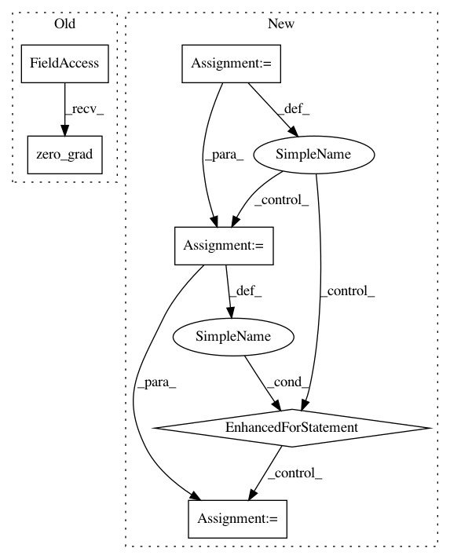

428516056abe41f135133e732a8d44af6ce9a234,rllib/policy/torch_policy.py,TorchPolicy,compute_gradients,#TorchPolicy#Any#,264
Before Change
train_batch = self._lazy_tensor_dict(postprocessed_batch)
loss_out = self._loss(self, self.model, self.dist_class, train_batch)
self._optimizer.zero_grad()
loss_out.backward()
grad_process_info = self.extra_grad_process()
After Change
grad_process_info = {}
grads = []
for i, opt in enumerate(self._optimizers):
opt.zero_grad()
loss_out[i].backward()
grad_process_info = self.extra_grad_process(opt, loss_out[i])
// Note that return values are just references;
// calling zero_grad will modify the values
for param_group in opt.param_groups:
for p in param_group["params"]:
if p.grad is not None:
grads.append(p.grad.data.cpu().numpy())
else:
grads.append(None)
grad_info = self.extra_grad_info(train_batch)
grad_info.update(grad_process_info)
return grads, {LEARNER_STATS_KEY: grad_info}
In pattern: SUPERPATTERN
Frequency: 3
Non-data size: 6
Instances
Project Name: ray-project/ray
Commit Name: 428516056abe41f135133e732a8d44af6ce9a234
Time: 2020-04-15
Author: sven@anyscale.io
File Name: rllib/policy/torch_policy.py
Class Name: TorchPolicy
Method Name: compute_gradients
Project Name: ray-project/ray
Commit Name: 428516056abe41f135133e732a8d44af6ce9a234
Time: 2020-04-15
Author: sven@anyscale.io
File Name: rllib/policy/torch_policy.py
Class Name: TorchPolicy
Method Name: learn_on_batch
Project Name: PacktPublishing/Deep-Reinforcement-Learning-Hands-On
Commit Name: 46476b9f95b34557dbd74fb707247e582861dad4
Time: 2017-12-26
Author: max.lapan@gmail.com
File Name: ch11/02_a3c_grad.py
Class Name:
Method Name: